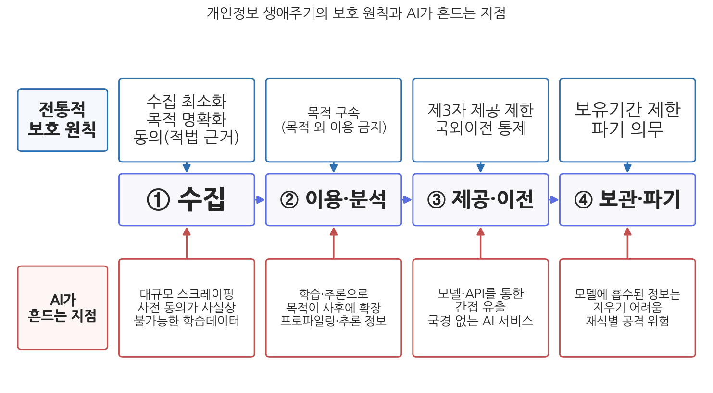

7주차 1차시. AI와 프라이버시 (1): 개인정보보호의 원리
순간 사진과 신문 기업이 사생활과 가정생활의 신성한 영역을 침범하고 있다. (워런·브랜다이스, 「프라이버시권」, 1890)
이 장에서 배우는 것
2021년 1월, 출시 3주 만에 이용자 75만 명을 모은 AI 챗봇 "이루다"가 서비스를 중단했다. 스무 살 여대생으로 설정된 이 챗봇은 놀랄 만큼 자연스러운 대화로 화제를 모았는데, 그 자연스러움의 원천이 문제였다. 개발사 스캐터랩은 자사의 연애 분석 앱 이용자 약 60만 명이 주고받은 카카오톡 대화 94억 건을 챗봇 학습에 썼고, 그 안에 있던 이름, 주소, 계좌번호 같은 정보를 지우지 않았다. 이용자들은 연애 상담을 받으려고 대화를 제공했지, 챗봇을 만드는 데 쓰라고 동의한 적이 없다고 항의했다. 개인정보보호위원회는 2021년 4월 스캐터랩에 과징금과 과태료 합계 1억 330만 원을 부과했다. AI 기업의 개인정보 처리에 대한 한국 최초의 제재였다.
이 사건은 이번 주의 질문을 압축해서 보여 준다. AI는 데이터를 먹고 자란다. 그런데 그 데이터의 상당 부분은 살아 있는 사람들의 기록이다. 누군가의 대화, 얼굴, 이동 경로, 진료 내역이 "학습데이터"라는 이름으로 모일 때, 지난 반세기 동안 쌓아 온 개인정보보호의 원칙들은 그대로 작동하는가. 이 장(1차시)은 원리를 다룬다. 프라이버시가 왜 보호할 가치인지, 개인정보보호의 기본 원칙이 무엇인지 확인한 뒤, AI가 그 원칙들을 어디서 어떻게 흔드는지, 그리고 공공데이터 활용이라는 공익 목표와 개인정보 보호가 어떻게 긴장하는지를 본다. 감시 기술과 법제도의 전체 지형은 다음 차시에서 다룬다. 구체적으로 다음을 배운다.
- 프라이버시라는 가치: "혼자 있을 권리"에서 개인정보자기결정권까지
- 개인정보보호의 기본 원칙: 수집 최소화, 목적 구속, 동의와 그 제도화의 계보
- AI가 바꾸는 프라이버시 지형: 대규모 학습데이터, 재식별, 추론된 정보
- 공공데이터 활용과 개인정보 보호의 긴장, 그리고 한국의 제도적 대응
이 장은 하나의 질문을 따라 전개된다. "동의와 목적 구속 위에 세워진 개인정보보호의 원칙은 AI 시대에도 유효한가?"
1.1 프라이버시가 왜 가치인지, 왜 행정의 문제인지를 본다 → 1.2 개인정보보호의 기본 원칙과 그 제도화(FIPPs, OECD, GDPR, 개인정보 보호법)를 정리한다 → 1.3 AI가 그 원칙들을 흔드는 세 지점(대규모 학습데이터, 재식별, 추론)을 본다 → 1.4 공공데이터 활용과 개인정보 보호의 긴장, 한국의 제도적 절충을 따진다.
1.1 프라이버시라는 가치
신기술이 낳은 권리: 혼자 있을 권리
프라이버시(privacy)가 법적 권리로 논의되기 시작한 계기는 흥미롭게도 기술이었다. 1890년 미국의 법률가 새뮤얼 워런(Samuel Warren)과 루이스 브랜다이스(Louis Brandeis)는 「프라이버시권(The Right to Privacy)」이라는 논문에서, 셔터만 누르면 찍히는 순간 사진과 선정적 대중 신문이라는 당대의 신기술이 개인의 사생활을 침범하고 있으므로 법이 "혼자 있을 권리(the right to be let alone)"를 보호해야 한다고 주장했다. 새로운 정보 기술이 등장할 때마다 프라이버시의 경계가 다시 그어져 온 역사가 여기서 시작된다. 카메라와 신문이 그랬고, 전화 도청이 그랬고, 컴퓨터 데이터베이스가 그랬으며, 이제 AI 차례다.
컴퓨터의 시대에 프라이버시 개념은 "간섭받지 않을 소극적 자유"에서 "내 정보를 통제할 적극적 권리"로 확장된다. 앨런 웨스틴(Alan Westin)은 『프라이버시와 자유(Privacy and Freedom)』(1967)에서 프라이버시를 "자신에 관한 정보가 언제, 어떻게, 어느 범위까지 타인에게 전달될지를 스스로 결정할 개인의 권리 주장"이라고 정의했다. 오늘날 각국 개인정보보호 법제의 철학적 뼈대가 된 정의다. 한편 대니얼 솔로브(Daniel Solove)는 「프라이버시의 분류학(A Taxonomy of Privacy)」(2006)에서 프라이버시 침해가 단일한 현상이 아니라 정보의 수집, 처리, 유포, 그리고 사적 영역에 대한 침입이라는 서로 다른 활동들에서 발생한다고 정리했다. 이 분류가 유용한 이유는, 뒤에서 보듯 AI가 특히 "처리" 단계, 곧 이미 수집된 정보를 결합하고 추론하는 단계에서 새로운 침해를 만들기 때문이다. 헬렌 니센바움(Helen Nissenbaum)의 맥락적 완전성(contextual integrity) 이론(2010)도 기억해 두자. 정보에는 그것이 흐르는 맥락마다 고유한 규범이 있어서, 병원에 준 정보가 보험사로, 연애 상담 앱에 준 대화가 챗봇 학습으로 흘러가면 그 자체가 프라이버시 침해라는 관점이다. 이루다 사건에서 이용자들이 느낀 배신감을 정확히 설명해 주는 이론이다.
왜 행정의 문제인가
프라이버시가 이 교재의 행정가치 목록(효율성, 투명성, 책임성, 형평성, 민주성에 이은 여섯 번째)에 오르는 이유는 두 가지다. 첫째, 국가는 가장 큰 개인정보 처리자다. 출생 신고부터 주민등록, 납세, 병역, 건강보험, 복지 수급, 출입국 기록까지, 정부만큼 한 사람의 일생을 촘촘히 기록하는 조직은 없다. 게다가 시민은 민간 서비스와 달리 국가의 정보 수집을 "탈퇴"할 수 없다. 주민등록을 거부하고 살 수는 없기 때문이다. 둘째, 프라이버시는 다른 가치들의 조건이다. 자신의 정보가 어떻게 쓰일지 모르는 시민은 말과 행동을 스스로 검열하게 되고(다음 차시에서 볼 위축 효과), 그런 시민들로는 6주차에서 본 민주적 참여와 숙의가 성립하지 않는다. 프라이버시는 개인의 안락이 아니라 자유롭고 민주적인 공동체의 기반 설비인 셈이다.
한국 법질서는 이 가치를 개인정보자기결정권이라는 독자적 기본권으로 승인했다.
개인정보자기결정권은 "자신에 관한 정보가 언제 누구에게 어느 범위까지 알려지고 또 이용되도록 할 것인지를 그 정보주체가 스스로 결정할 수 있는 권리", 곧 정보주체가 개인정보의 공개와 이용에 관하여 스스로 결정할 권리를 말한다(헌법재판소 2005. 5. 26. 선고 99헌마513 결정). 웨스틴의 정의가 헌법의 언어로 번역된 것이라 보아도 좋다. 이 결정은 지문 날인 제도의 위헌 여부를 다투는 사건에서 나왔다.
헌법 조문 어디에도 "개인정보자기결정권"이라는 말은 없다. 헌법재판소는 사생활의 비밀과 자유(제17조), 인간의 존엄과 가치 및 행복추구권(제10조)에서 나오는 일반적 인격권, 나아가 자유민주적 기본질서와 국민주권 원리까지 근거로 검토한 뒤, 이 권리를 그중 어느 한두 조문에 완전히 포섭시키기는 어렵다고 보아 헌법에 명시되지 않은 독자적 기본권으로 인정했다(99헌마513). 어느 조문에서 나오느냐가 왜 중요한가. 근거 조문이 권리의 보호 범위와 제한 논리를 정하기 때문이다. 독자적 기본권 구성은 "사생활"이라는 좁은 울타리를 넘어, 공개된 정보라도 그 흐름을 통제할 권리가 정보주체에게 있다는 함의를 갖는다. 공개된 개인정보의 AI 학습 활용을 둘러싼 오늘의 논쟁(1.3절)에서 이 함의가 다시 문제 된다.
1.2 개인정보보호의 기본 원칙
원칙의 계보: FIPPs에서 GDPR까지
개인정보보호의 원칙들은 1970년대에 골격이 만들어졌다. 정부와 기업이 메인프레임 컴퓨터로 대규모 개인 기록을 축적하기 시작하자, 미국 보건교육복지부는 1973년 보고서에서 공정정보실행원칙(Fair Information Practice Principles, FIPPs)을 제시했다. 비밀 데이터베이스는 없어야 하고, 자신에 관한 기록을 확인할 수 있어야 하며, 한 목적으로 수집된 정보가 동의 없이 다른 목적에 쓰여서는 안 된다는 내용이다. 이 원칙을 국제 표준으로 다듬은 것이 OECD의 「프라이버시 보호와 개인정보의 국경 간 유통에 관한 가이드라인」(1980)의 8원칙이다. 수집 제한, 정보 정확성, 목적 명확화, 이용 제한, 안전성 확보, 처리의 공개, 개인 참가, 책임의 원칙이 그것으로, 이후 각국 입법의 공통 문법이 되었다.
제도화의 경로는 나라마다 달랐다. 미국은 연방 차원의 일반법 없이 분야별, 주별 입법으로 대응해 왔고, 캘리포니아주는 2023년부터 개인정보보호권리법(CPRA)을 시행하고 있다. EU는 2018년부터 일반 개인정보보호법(General Data Protection Regulation, GDPR)을 시행하여 가장 포괄적이고 강력한 보호 체제를 세웠다. 한국은 2011년 개인정보 보호법을 제정했고, 2020년 8월부터는 이른바 데이터 3법(개인정보 보호법, 정보통신망법, 신용정보법) 개정을 통해 가명정보 개념을 도입하는 등 "보호와 활용의 균형"으로 방향을 조정했다.
원칙들의 핵심은 세 개의 기둥으로 요약할 수 있다. 첫째 기둥은 수집 최소화다. 목적에 필요한 최소한의 정보만 모아야 한다. 둘째 기둥은 목적 구속(purpose limitation)이다. 수집할 때 밝힌 목적의 범위 안에서만 쓰고, 다른 목적에 쓰려면 새로 동의를 받아야 한다. 셋째 기둥은 정보주체의 통제다. 처리의 적법 근거(대표적으로 동의)를 갖추고, 열람, 정정, 삭제 등 정보주체의 권리를 보장해야 한다. 세 기둥 모두 하나의 전제 위에 서 있다. 어떤 정보를, 어떤 목적으로, 어떻게 쓸지를 수집하는 시점에 미리 특정할 수 있다는 전제다. AI가 흔드는 것이 바로 이 전제인데, 그 전에 보호 대상인 "개인정보"가 무엇인지부터 분명히 하자.
개인정보 보호법에서 개인정보는 살아 있는 개인에 관한 정보로서 ① 성명, 주민등록번호, 영상 등을 통해 개인을 알아볼 수 있는 정보, ② 그 자체로는 특정 개인을 알아볼 수 없어도 다른 정보와 쉽게 결합하여 알아볼 수 있는 정보, ③ ①이나 ②를 가명처리하여 추가 정보의 사용·결합 없이는 특정 개인을 알아볼 수 없게 한 정보(가명정보)를 말한다. 가명정보는 통계 작성, 과학적 연구, 공익적 기록 보존 목적이라면 정보주체의 동의 없이 처리할 수 있다. 반면 시간과 비용, 기술을 합리적으로 고려할 때 다른 정보를 써도 개인을 알아볼 수 없는 익명정보는 아예 이 법의 적용을 받지 않는다. 보호의 강도가 "식별 가능성"이라는 눈금 위에서 정해지는 구조인데, 1.3절에서 보듯 AI는 이 눈금 자체를 움직인다.
생애주기로 보는 원칙
이 원칙들은 개인정보의 생애주기, 곧 수집, 이용·분석, 제공·이전, 보관·파기의 각 단계에 배치된 안전장치로 이해하면 선명해진다.

그림 7-1을 읽는 법은 이렇다. 가운데 줄이 개인정보의 네 단계 생애주기이고, 위 줄은 각 단계에 배치된 전통적 보호 원칙, 아래 줄은 AI가 각 단계에서 만드는 균열이다. 이 그림에서 알 수 있는 것은 두 가지다. 첫째, 전통적 보호 체계는 생애주기의 모든 단계를 원칙으로 둘러싼 꽤 정교한 설계라는 점이다. 둘째, AI의 도전은 어느 한 단계가 아니라 네 단계 전부에 걸쳐 있다는 점이다. 수집 단계에서는 동의가 어렵고, 이용 단계에서는 목적이 사후에 확장되며, 제공 단계에서는 모델과 API를 통해 정보가 국경을 넘고, 파기 단계에서는 모델 안에 흡수된 정보를 지우기 어렵다. 1.3절에서 이 균열들을 차례로 살핀다.
한국의 최근 법 개정도 이 생애주기 위에서 이해할 수 있다. 2023년 3월 전면 개정된 개인정보 보호법은 첫째, 정보주체가 자신의 개인정보를 한 사업자에서 다른 사업자로 옮기도록 요구할 수 있는 전송요구권을 신설해 전 분야 마이데이터(MyData)의 법적 기반을 놓았고(2025년 3월부터 의료, 통신 등에서 단계적 시행), 둘째, 개인정보 국외이전의 요건을 다양화하는 동시에 보호가 부실한 이전을 멈출 수 있는 중지명령권을 도입했으며, 셋째, 드론, 자율주행차 같은 이동형 영상정보처리기기의 촬영을 규율하고 온라인과 오프라인으로 이원화되어 있던 규제를 일원화했다. 제재의 무게중심도 형사처벌에서 경제적 제재(과징금) 중심으로 옮겼다. 생애주기의 언어로 말하면 이용 단계의 통제권(전송요구권)과 이전 단계의 통제(국외이전 중지명령)를 강화한 개정이다. 이 개정의 나머지 축인 자동화된 결정에 대한 대응권은 다음 차시에서 본다.
1.3 AI가 바꾸는 프라이버시 지형
동의 모델의 균열: 대규모 학습데이터
AI, 특히 기계학습은 데이터가 많을수록 성능이 좋아진다. 그래서 개발자들은 웹에 공개된 텍스트와 이미지를 대규모로 긁어모으고(스크레이핑), 서비스 운영 중 쌓인 데이터를 학습에 재활용한다. 여기서 첫 번째 균열이 생긴다. 전통적 보호 체계는 "수집 목적과 항목을 사전에 특정하고 동의를 받는" 방식으로 설계되었는데, 수억 명의 데이터가 뒤섞인 학습 말뭉치에서 정보주체 개개인의 동의를 받는 일은 사실상 불가능하고, 경우에 따라서는 개념적으로도 성립하지 않는다. 예를 들어 기지국 접속 정보로 특정 지역의 인파 밀집 위험을 예측하는 서비스를 만든다고 하자. 그 지역을 지나는 모든 휴대전화의 주인에게 미리 동의를 받을 수 있는가. 동의하지 않은 사람의 기기만 빼고 세면 예측 자체가 성립하는가. 실제로 서울시는 이동통신 기지국 접속 정보를 활용해 주요 지역의 실시간 인구 밀집도를 추정하는 서비스를 운영하는데, 이는 개별 동의가 아니라 통계적 처리(비식별화)라는 다른 경로로 적법성을 확보한 경우다.
목적 구속의 원칙도 같은 압력을 받는다. 학습데이터는 수집될 때의 목적(연애 상담, 검색, 소셜미디어)과 전혀 다른 목적(챗봇, 이미지 생성, 프로파일링)에 쓰이는 것이 보통이고, 학습된 모델이 앞으로 어떤 용도에 쓰일지는 개발자 자신도 다 알지 못한다. "목적을 미리 특정한다"는 전제가 흔들리는 것이다.
스캐터랩은 연애 분석 앱 "텍스트앳"과 "연애의 과학" 이용자들이 제출한 카카오톡 대화를 모아 두었다가, 2020년 챗봇 "이루다"의 학습과 운영에 사용했다. 약 60만 명의 대화 94억 건 규모였고, 학습 과정에서 이름, 휴대전화번호, 주소 등이 삭제되거나 암호화되지 않았다. 서비스 출시 후 이루다가 실제 인물의 주소나 계좌 정보로 보이는 문장을 내뱉는 사례가 보고되었고, 개발자들이 코드 공유 사이트 깃허브에 실명이 포함된 대화 1,400여 건을 올려 둔 사실도 드러났다. 개인정보보호위원회는 2021년 4월, 앱 개인정보처리방침에 "신규 서비스 개발"이 포함되어 있었다는 사정만으로는 이용자가 자기 연애 대화가 챗봇 학습에 쓰일 것을 예상할 수 없었다고 판단하고, 과징금과 과태료 합계 1억 330만 원을 부과했다. AI 기업의 무분별한 개인정보 처리를 제재한 한국 첫 사례다(개인정보보호위원회 보도자료, 2021. 4. 28.).
이 사건이 보여 주는 것은 세 가지다. 첫째, 포괄 동의("신규 서비스 개발에 이용")는 동의가 아니라는 것, 곧 동의의 형식이 아니라 정보주체의 합리적 기대가 기준이라는 것이다. 니센바움의 맥락적 완전성이 규제 실무의 언어로 나타난 셈이다. 둘째, 학습데이터의 오염은 모델의 출력으로 되살아난다는 것이다. 지워지지 않은 개인정보는 챗봇의 입을 통해 언제든 재등장할 수 있다. 셋째, 이 문제는 한국만의 것이 아니라는 점이다. 이탈리아 개인정보 감독기구(Garante)는 2024년 12월 오픈AI(OpenAI)에 대해, 챗GPT 학습에 이용자의 개인정보를 처리하면서 적법한 근거를 갖추지 못했고 투명성 의무를 위반했다는 이유 등으로 1,500만 유로의 과징금을 부과했다(오픈AI는 불복해 다투고 있다). 학습데이터의 적법성은 지금 세계 개인정보 감독기구들의 공통 의제다.
익명화의 약속과 재식별
두 번째 균열은 "식별 가능성"이라는 눈금 자체에 생긴다. 1.2절에서 보았듯 보호 체계는 식별 가능한 정보(강한 보호), 가명정보(제한적 활용 허용), 익명정보(적용 제외)를 구분한다. 문제는 무엇이 "익명"인가가 기술 수준에 따라 변한다는 점이다. 계산 능력과 결합 가능한 데이터가 늘수록, 어제의 익명정보가 오늘은 식별 가능한 정보가 된다.
증거는 오래전부터 쌓여 왔다. 라타냐 스위니(Latanya Sweeney)는 우편번호, 생년월일, 성별 세 가지만으로 미국 인구의 약 87%를 유일하게 식별할 수 있음을 보였다(Sweeney 2000). 나라야난과 시마티코프는 넷플릭스가 추천 알고리즘 대회를 위해 "익명"으로 공개한 시청 기록을 공개 영화평 사이트의 데이터와 대조해 상당수 이용자를 재식별했다(Narayanan and Shmatikov 2008). 로셰 등이 『네이처 커뮤니케이션스』에 발표한 연구는 15개의 인구학적 속성만 있으면 미국인의 99.98%를 재식별할 수 있다고 추정했다(Rocher, Hendrickx and de Montjoye 2019). 불완전하게 익명화된 데이터의 공개는 "언젠가 풀릴 자물쇠"를 채워 내보내는 일에 가깝다는 뜻이다.
AI는 이 위험을 두 방향에서 키운다. 하나는 결합 능력이다. 흩어진 조각 정보를 대규모로 묶어 패턴을 찾는 것이 기계학습의 본령이므로, 재식별에 필요한 "다른 정보와의 결합"이 그만큼 쉬워진다. 다른 하나는 복원 능력이다. 개인정보보호위원회가 비정형데이터 가명처리 기준(2024년 2월)에서 든 예처럼, 얼굴 사진 한 장은 식별 위험이 낮아도 여러 각도의 사진을 결합하면 위험이 커지고, 음성 변조 규칙을 모르는 채로도 AI가 원래 목소리를 복원해 내는 기술이 등장하고 있다. 식별 가능/불가능의 구분은 이제 데이터의 고정된 속성이 아니라 처리 맥락과 기술 수준에 따라 달라지는 판단의 문제가 되었고, 규제 실무도 그렇게 바뀌고 있다.
준 적 없는 정보: 추론과 프로파일링
세 번째 균열이 가장 근본적이다. AI는 수집한 정보에서 수집하지 않은 정보를 만들어 낸다. 구매 내역에서 임신 여부를, "좋아요" 기록에서 정치 성향과 성적 지향을, 걸음걸이 영상에서 건강 상태를 추론하는 식이다. 이렇게 추론된 정보(inferred data)는 정보주체가 제공한 적도, 제공에 동의한 적도 없는 정보다. 수집 시점의 동의를 축으로 설계된 보호 체계에 정면으로 구멍을 내는 지점이다.
미국의 대형 유통업체 타깃(Target)은 고객의 구매 패턴을 분석해 "임신 예측 점수"를 산출했다. 무향 로션, 특정 영양제 등 25개 품목의 구매 변화만으로 임신 여부와 출산 예정 시기까지 추정해 유아용품 쿠폰을 보내는 마케팅이었다. 『뉴욕타임스 매거진』의 보도(Duhigg 2012)로 널리 알려진 일화에서, 미네소타의 한 아버지는 고등학생 딸에게 유아용품 쿠폰이 배달되자 매장에 항의했다가, 뒤에 딸이 실제로 임신 중이었음을 알게 되었다. 기업의 알고리즘이 가족보다 먼저 임신을 "알았던" 것이다. 타깃은 이후 임신 관련 쿠폰을 일반 상품 광고 사이에 섞어 보내는 식으로 추론 사실이 드러나지 않게 마케팅 방식을 조정했다.
이 사례가 보여 주는 것은 추론의 세 가지 성격이다. 첫째, 추론은 동의를 우회한다. 고객은 로션 구매 정보의 수집에 동의했을 뿐 임신 추정에 동의한 적이 없다. 둘째, 추론은 민감정보를 만든다. 건강, 정치 성향, 성적 지향처럼 법이 특별히 보호하는 정보가 평범한 정보의 조합에서 생산된다. 셋째, 추론은 틀릴 수 있고, 틀려도 본인은 모른다. 3주차에서 본 불투명성 문제와 겹치는 대목이다. 추론된 정보가 신용, 채용, 보험, 나아가 행정 결정에 쓰인다면, 정보주체는 자신이 알지도 못하는 "자신에 관한 정보"에 의해 대우받게 된다. 프로파일링(profiling), 곧 개인의 특성과 행동을 자동으로 분석·예측하는 처리가 GDPR과 한국법에서 특별한 규율 대상이 된 이유이며, 그 규율의 내용(자동화된 결정에 대한 대응권)은 다음 차시에서 다룬다.
규정 중심에서 원칙 중심으로
이런 균열들 앞에서 규제가 택할 수 있는 길은 둘이다. 하나는 균열이 생길 때마다 세부 규정을 덧대는 길이고, 다른 하나는 기본 원칙을 세운 뒤 처리자가 맥락에 맞게 위험을 통제하도록 하고 그 결과에 책임을 지우는 길이다. AI 시대의 개인정보 규율은 대체로 후자, 곧 규정 중심에서 원칙 중심으로 이동하고 있다. 개별 동의가 불가능한 상황을 인정하되, "정당한 이익"과 같은 다른 적법 근거를 정교화하고, 사전 위험 통제와 신뢰 확보를 요구하는 방향이다. AI 서비스에 국경이 없는 만큼 국가 간에 통용되는 원칙(글로벌 스탠다드)의 비중도 커지고 있다.
한국의 대응이 좋은 관찰 사례다. 개인정보보호위원회는 2024년 2월 이미지, 영상, 음성 등 비정형데이터의 가명처리 기준을 마련했고, 2024년 7월에는 AI 개발에 공개된 개인정보를 활용할 수 있는 처리 기준을 내놓았다. 후자에 따르면 목적의 정당성, 수집·이용의 필요성, 구체적 이익형량이라는 조건을 충족하는 "정당한 이익"이 인정될 때 공개된 개인정보를 AI 학습과 서비스 개발에 쓸 수 있으며, 기업은 안내서가 제시한 안전 조치들 가운데 자기 특성에 맞는 최적 조합을 선택해 이행하면 된다. 2025년 8월에는 이를 생성형 AI 전반으로 확장한 「생성형 AI 개발·활용을 위한 개인정보 처리 안내서」가 나왔다. 수집 단계의 동의라는 관문 대신, 처리 전 과정의 위험 통제라는 그물로 무게중심을 옮기는 흐름이다.
원칙 중심 규율은 기술 변화에 유연하고 혁신을 덜 가로막지만, 공짜가 아니다. 첫째, "정당한 이익"이나 "합리적 안전 조치" 같은 열린 기준은 해석의 몫이 커서, 자원이 많은 대기업에 유리하고 규제 불확실성을 감수해야 하는 중소기업과 정보주체에게는 부담이 될 수 있다. 둘째, 이익형량을 처리자 스스로 하게 하면 "심판을 겸하는 선수" 문제가 생긴다. 사후 감독과 제재가 충분히 강하지 않으면 원칙은 선언에 그친다. 원칙 중심으로 갈수록 감독기구의 역량과 독립성, 그리고 다음 차시에서 볼 영향평가 같은 절차적 장치가 더 중요해지는 이유다.
1.4 공공데이터 활용과 개인정보의 긴장
개방의 논리와 보호의 논리
이 긴장은 공공부문에서 가장 첨예하다. 정부가 보유한 데이터는 시민의 세금으로 만들어진 공공자원이므로 널리 개방해 활용하게 해야 한다는 것이 공공데이터 개방의 논리다. 한국은 2013년 「공공데이터의 제공 및 이용 활성화에 관한 법률」을 제정하고 공공데이터포털을 통해 데이터를 개방해 왔으며, OECD의 공공데이터 개방 평가에서 여러 차례 최상위권에 오를 만큼 개방에 적극적이다. 그런데 공공데이터의 상당수는 사람에 관한 데이터다. 건강보험 진료 기록, 복지 수급 이력, 교통카드 승하차 기록처럼 활용 가치가 큰 데이터일수록 개인정보 밀도도 높다. 개방과 활용의 논리(효율성, 투명성, 혁신)와 보호의 논리(프라이버시)가 같은 데이터 위에서 충돌하는 것이다.
데이터 3법 이후 한국 제도는 이 충돌을 "가명처리 후 활용"이라는 절충으로 다루어 왔다. 개인정보를 가명정보로 바꾸면 통계 작성과 과학적 연구 목적으로 동의 없이 활용할 수 있고, 서로 다른 기관의 가명정보는 지정된 전문기관을 통해 결합할 수 있다. 그러나 1.3절에서 본 재식별 위험 때문에 가명정보 활용은 실제로는 상당히 보수적으로 운영되어 왔고, AI 연구처럼 원본에 가까운 대규모 데이터가 필요한 분야에서는 가명처리가 성능을 크게 떨어뜨린다는 불만도 쌓였다. 자율주행 영상에서 보행자 얼굴을 모두 지우면 정작 보행자 인식 성능이 떨어지는 식의 딜레마다.
절충의 제도들: 안심구역, 특례, 사전적정성 검토
최근 제도들은 이 딜레마를 "환경을 통제하고 활용을 넓히는" 방식으로 풀려 한다. 세 가지가 대표적이다.
첫째, 개인정보 안심구역이다. 기술적 안전 조치와 데이터 처리 과정에 대한 사전·사후 통제를 갖춘 기관 안에서는 기존에 사실상 제한되어 온 가명정보 처리를 유연하게 허용하는 제도로, 2024년 10월 국립암센터(암 데이터 분석을 통한 항암제 표적 유전자 발굴), 한국사회보장정보원(맞춤형 복지) 등 5개 기관이 시범운영 기관으로 지정되었다. 데이터를 밖으로 내보내는 대신 통제된 공간 안으로 연구자를 불러들이는 발상이다.
둘째, 분야별 특례다. 자율주행차와 로봇 기업이 정해진 안전 조치를 준수하면 정보주체 동의 없이 촬영 영상 원본을 AI 학습에 활용할 수 있도록 규제 샌드박스를 통해 허용한 사례, 첨단바이오 분야 국제공동연구에 필요한 가명 데이터셋을 환자 동의 없이 활용할 수 있게 한 사례가 있다. 가명처리가 오히려 안전(보행자 인식 오류)을 해치는 상황을 인정한, 원칙 중심 규율의 실험들이다.
셋째, 사전적정성 검토제다. AI 등 신기술 분야에서 사업자가 개인정보 보호법을 준수하는 방안을 정부와 함께 설계하고, 사업자가 이를 성실히 적용했다면 나중에 사정 변화가 없는 한 행정처분을 하지 않는 제도다. 채용 플랫폼에서 구직자가 스스로 특정 기업을 골라 지원하는 경우 별도의 제3자 제공 동의를 다시 받지 않아도 된다고 판단한 의결 사례가 있다. 규제 불확실성이라는, 원칙 중심 규율의 약점(위 유의 박스)을 보완하는 장치인 셈이다.
2023년 개정 개인정보 보호법이 신설한 전송요구권(제35조의2)이 2025년 3월부터 시행되면서, 금융 분야에 먼저 도입되었던 마이데이터가 의료, 통신, 에너지 분야로 확대되었다. 정보주체는 자신이 제공했거나 자신의 활동으로 생성된 개인정보를 본인 또는 다른 사업자에게 전송하도록 요구할 수 있고, 이후 교육, 고용, 교통 등으로 적용 분야를 넓혀 가도록 설계되어 있다(개인정보보호위원회, 전 분야 마이데이터 제도 안내). 통신사를 옮길 때 기존 통신사에 이용 데이터를 새 통신사로 보내라고 요구하는 식이다. 이 제도는 개인정보를 "가두는" 보호가 아니라 정보주체의 결정에 따라 "흐르게 하는" 보호, 곧 개인정보자기결정권의 적극적 실현이라는 점에서 보호와 활용의 관계를 다시 정의한다.
이 절충의 제도들이 보여 주는 것은, 공공데이터와 개인정보의 긴장이 "개방이냐 보호냐"의 양자택일이 아니라 어떤 조건에서, 누구의 통제 아래, 얼마나 흐르게 할 것인가라는 설계의 문제로 진화하고 있다는 점이다. 다만 설계가 정교해질수록 시민이 그 설계를 이해하고 감시하기는 어려워진다. 가명처리, 안심구역, 이익형량 같은 장치들의 적정성을 누가 어떻게 검증하는가. 이 질문은 결국 감독기구와 영향평가, 그리고 법제 전반의 문제로 이어진다. 다음 차시에서는 시선을 넓혀, 국가 자신이 감시자가 될 때의 문제(안면인식과 국가 감시)와 이를 규율하는 법제의 전체 지형(개인정보 보호법, GDPR, EU AI Act)을 다룬다.
요약
프라이버시는 신기술의 침입에 대한 응답으로 성장해 온 가치다. 워런과 브랜다이스의 "혼자 있을 권리"(1890)에서 웨스틴의 정보 통제권(1967)을 거쳐, 한국 헌법재판소는 개인정보자기결정권을 헌법에 명시되지 않은 독자적 기본권으로 인정했다(99헌마513). 국가는 시민이 탈퇴할 수 없는 최대의 개인정보 처리자이므로 프라이버시는 행정가치이며, 자유로운 시민의 형성을 통해 민주주의의 기반이 된다. 개인정보보호의 원칙은 1973년 FIPPs와 OECD 8원칙(1980)에서 골격이 만들어져 수집 최소화, 목적 구속, 정보주체의 통제라는 세 기둥으로 각국 법제(GDPR, 개인정보 보호법)에 제도화되었고, 보호의 강도는 식별 가능성의 눈금(개인정보, 가명정보, 익명정보) 위에서 정해진다. AI는 이 체계를 세 지점에서 흔든다. 대규모 학습데이터는 사전 동의와 목적 특정을 사실상 불가능하게 만들고(이루다 사건), 결합·복원 능력의 향상은 익명화의 약속을 침식하며(재식별 연구들), 추론과 프로파일링은 정보주체가 준 적 없는 민감정보를 만들어 동의 체계를 우회한다(타깃 사례). 이에 규율은 규정 중심에서 원칙 중심으로 이동하고 있으며, 한국은 비정형데이터 가명처리 기준, 공개 데이터의 "정당한 이익" 처리 기준, 생성형 AI 안내서로 대응해 왔다. 공공데이터 활용과 개인정보의 긴장은 가명처리 활용, 개인정보 안심구역, 분야별 특례, 사전적정성 검토제, 그리고 2025년 시행된 전송요구권(마이데이터)처럼 "조건을 설계해 흐르게 하는" 절충으로 진화하고 있으나, 그 설계의 적정성을 검증할 감독과 절차의 문제를 남긴다.
토론·복습 문제
7-1. (서술형 연습) 개인정보보호의 세 기둥(수집 최소화, 목적 구속, 정보주체의 통제)이 공통으로 전제하는 것이 무엇인지 밝히고, AI의 대규모 학습데이터, 재식별, 추론이 각각 그 전제를 어떻게 흔드는지 이루다 사건과 타깃 사례를 활용하여 논술하시오.
7-2. (찬반 토론) 개인정보보호위원회의 2024년 기준은 "정당한 이익"이 인정되면 웹에 공개된 개인정보를 동의 없이 AI 학습에 쓸 수 있게 했다. "공개된 정보는 이미 본인이 공개를 선택한 것이므로 활용을 넓혀야 한다"는 입장과 "공개는 특정 맥락에서의 공개일 뿐이므로 학습 활용은 별도의 통제를 받아야 한다"는 입장으로 나뉘어 토론해 보시오. 맥락적 완전성 개념과 개인정보자기결정권의 논리를 각각 어느 쪽이 원용할 수 있는지 따져 보시오.
7-3. 여러분이 자주 쓰는 앱 하나를 골라 개인정보처리방침을 실제로 열어 읽고, 그림 7-1의 생애주기 네 단계에 해당하는 내용이 각각 어떻게 서술되어 있는지 확인해 보시오. AI 학습 활용에 관한 조항이 있는가. 있다면 정보주체로서 어떤 통제 수단이 주어져 있는가.
7-4. 개인정보 안심구역과 사전적정성 검토제는 공공데이터 활용과 개인정보 보호의 긴장을 푸는 한국식 절충이다. 두 제도가 각각 어떤 딜레마를 어떤 방식으로 완화하는지 설명하고, 이 절충이 실패한다면 어느 지점에서 실패할 가능성이 큰지 1.3절의 "원칙 중심 규율의 양날" 논의를 활용해 진단해 보시오.